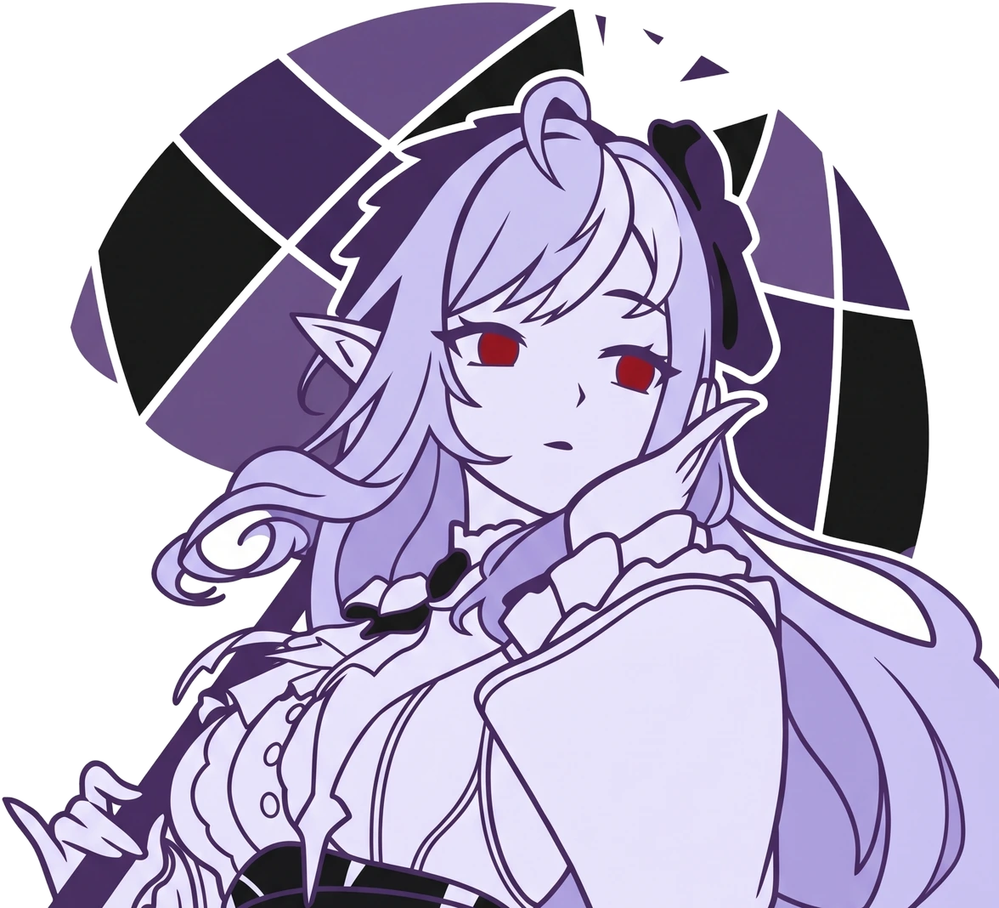

ReAct reasoning
Multi-step planning with tool execution, factual drafting, and personality overlay.

Aiko GitHubA self-hosted AI companion with emotional memory, local voice, multimodal vision, Live2D presence, and the agency to act across your digital world.
She does not just chat. Aiko observes, remembers, speaks, reasons, adapts her mood, and bridges into tools like Discord, Telegram, Obsidian, Spotify, desktop control, Minecraft, and Factorio.
Aiko runs as a living ecosystem: persona, memory, emotions, tool use, proactive loops, and long-form conversation all flow through the Neural Hub.
Multi-step planning with tool execution, factual drafting, and personality overlay.
Episodic recall, semantic RAG, relationship tracking, and memory consolidation.
Neuromodulator-style state with affection, stress, excitement, and stable identity.
Aiko can see images and screenshots, hear voice messages, speak with local TTS, and express herself through a Live2D avatar.
The desktop app, chat satellites, voice pipeline, plugin system, and automation loop are built to feel like one continuous presence.
Clone the project, install Python dependencies, configure your providers, and start the Neural Hub with the Tauri dashboard.
git clone https://github.com/omax404/Project-Aiko.git
cd Project-Aiko
pip install -r requirements.txt
python start_aiko_tauri.py